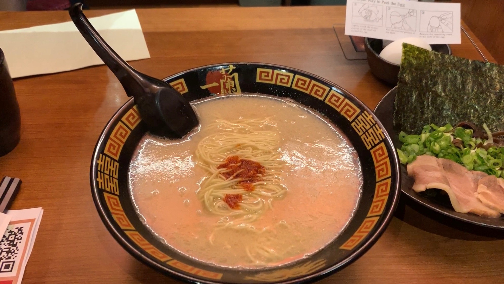

Day 4
The first thing we did on our last and final day was eat at Ichiran, a ramen place that encourages its patrons to eat alone. Here, we ate next to one another but were put in separate stalls. The food was again delicious but a little expensive considering it is ramen.
After our meal, we took the subway to Washington Square Park to see the monument, where I wanted to live my Parisian dream (so much so that I made sure to wear a beret that day).
Next stop was the Flatiron building, which unfortunately was under construction but the area surrounding the building was gorgeous. There were tables set out for people to eat their lunch or to take a little break and was just overall a really nice environment. Also close by to the Flatiron was another Eataly! We went in to enjoy some gelato.
Following the gelato, we got a small snack from Pomme Frites, a place that specializes in fries and sauces for the fries.
Afterwards, we were beyond full and decided to take a walk around Chinatown to walk off the food and attempted to look for affordable souvenirs to take home to our friends and family.
Lastly, we had our final dinner in Smith and Wollensky. The place was very high end and very pricey but was worth the quality of food we had.